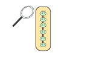

Viendo Commits anteriores
git checkout
El comando git checkout cumple tres funciones distintas y es el registro de los commits, la protección de archivos y el cambio hacia ramas existentes en el repositorio.
Uso:
git checkout master
Nos permite regresar a la rama principal o rama master del proyecto.
git checkout <commit> <file>
Podemos ver una versión anterior de un <file> (archivo) que reside en el directorio de trabajo en una copia exacta del proyecto.
git checkout <commit>
Actualiza todos los archivos del directorio de trabajo que coincida con el commit especificado.
Siguiente